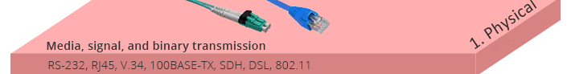
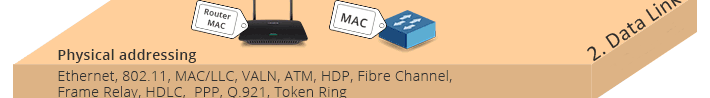
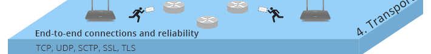
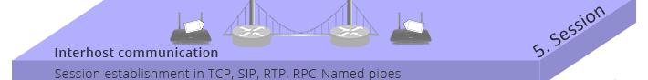
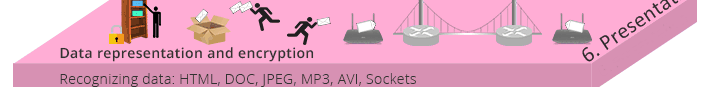
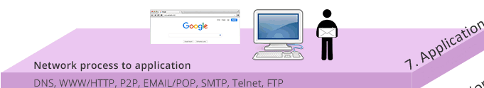

Netzwerztechnkik
Ein kleine Übersicht

Netzwerktechnik ist das Rückgrat unserer modernen Kommunikationssysteme. Sie umfasst eine Vielzahl von Technologien und Methoden, die verwendet werden, um Computer und andere Geräte miteinander zu verbinden. Von lokalen Netzwerken (LANs) in kleinen Büros bis hin zu weltumspannenden Weitverkehrsnetzwerken (WANs), die ganze Kontinente verbinden, spielt die Netzwerktechnik eine entscheidende Rolle für die reibungslose Übertragung von Daten und die gemeinsame Nutzung von Ressourcen.
Netzwerk Arten
Welche Arten es von Netzwerken gibt
Netzwerk Arten einfach erklärt:
Netzwerke verbinden Computer und andere Geräte, um Daten auszutauschen und Ressourcen zu teilen. Es gibt verschiedene Arten von Netzwerken, die sich in Größe, Reichweite und Funktion unterscheiden:
Lokales Netzwerk (LAN - Local Area Network): LAN verbindet Geräte in einem begrenzten Bereich wie einem Büro oder Zuhause. Es bietet hohe Geschwindigkeit und niedrige Latenz. Ein Beispiel ist ein Klassenzimmer, in dem Computer mit einem Drucker verbunden sind.

Stadtweites Netzwerk (MAN - Metropolitan Area Network): MAN erstreckt sich über eine Stadt oder größere Region, verbindet mehrere LANs und bietet höhere Bandbreiten. Ein Beispiel ist ein Netzwerk, das verschiedene Universitätsgebäude in einer Stadt verbindet
Weitverkehrsnetzwerk (WAN - Wide Area Network): WAN deckt große geografische Bereiche wie Länder oder Kontinente ab, verbindet mehrere LANs und MANs und nutzt oft das Internet. Das größte WAN ist das Internet, das weltweit Millionen von Netzwerken verbindet.

Netzwerk (WLAN - Wireless Local Area Network): WLAN ist ein LAN, das drahtlose Technologie wie Wi-Fi verwendet, um Geräte zu verbinden. Es bietet Mobilität und Flexibilität, z.B. die drahtlose Verbindung eines Laptops zu einem Router zu Hause.

Persönliches Netzwerk (PAN - Personal Area Network): PAN verbindet Geräte in der Nähe einer Person, oft über Bluetooth oder USB. Ein Beispiel ist die Verbindung eines Smartphones mit einem Laptop über Bluetooth.

Diese Netzwerkarten bieten verschiedene Vorteile und sind für unterschiedliche Anwendungen und Umgebungen geeignet, je nach Reichweite, Geschwindigkeit und Verbindungsart
Netzwerk Sicherheit
Keine offenen Türen lassen
Netzwerk Sicherheit ist entscheidend, um die Vertraulichkeit, Integrität und Verfügbarkeit von Daten in einem Netzwerk zu gewährleisten. Dabei gibt es einige wichtige Aspekte zu beachten:

Firewalls:Einrichtung von Firewalls, um unerwünschten Netzwerkverkehr zu blockieren und das Netzwerk vor unbefugtem Zugriff zu schützen.

Verschlüsselung:Verwendung von Verschlüsselungstechnologien wie SSL/TLS, um Daten während der Übertragung zu schützen und sicherzustellen, dass sie nicht von Dritten abgefangen oder geändert werden können.

Zugriffskontrolle:Implementierung von Zugriffskontrollmechanismen wie Passwörtern, Authentifizierung und Autorisierung, um sicherzustellen, dass nur autorisierte Benutzer auf das Netzwerk und die darauf gespeicherten Daten zugreifen können.

Regelmäßige Updates:Aktualisierung von Software und Systemen, um Sicherheitslücken zu schließen und das Netzwerk vor bekannten Bedrohungen zu schützen.

Sicherheitsüberwachung:Kontinuierliche Überwachung des Netzwerkverkehrs und der Systemaktivitäten, um potenzielle Angriffe oder Sicherheitsvorfälle frühzeitig zu erkennen und darauf zu reagieren.

Durch die Umsetzung dieser Maßnahmen kann die Sicherheit des Netzwerks verbessert werden, um Daten vor unerlaubtem Zugriff, Manipulation und Diebstahl zu schützen.
OSI Schichtenmodell
Wie funktioniert es ?

Die Schichten:
Physische Schicht (Physical Layer):
- Aufgabe: Übertragung von rohen Bitströmen über ein physisches Medium.
- Beispiele: Kabel, Stecker, elektrische Signale, Netzwerkkarten.
Sicherungsschicht (Data Link Layer):
- Aufgabe: Sicherstellung einer fehlerfreien Übertragung der Daten über die physische Verbindung. Sie organisiert die Daten in Frames und kümmert sich um die Fehlererkennung und -korrektur.
- Beispiele: Ethernet, MAC-Adressen, Switches.
Vermittlungsschicht (Network Layer):
- Aufgabe: Bestimmung des besten Pfades für die Datenübertragung durch das Netzwerk. Hier wird auch das Routing behandelt.
- Beispiele:IP-Adressen, Router, IP (Internet Protocol).
Transportschicht (Transport Layer):
- Aufgabe: Gewährleistung einer zuverlässigen Datenübertragung zwischen den Endpunkten eines Netzwerks. Dies beinhaltet die Segmentierung der Daten, Fehlerkorrektur und Flusskontrolle.
- Beispiele:TCP (Transmission Control Protocol), UDP (User Datagram Protocol).
Sitzungsschicht (Session Layer):
- Aufgabe: Steuerung der Verbindungen und Sitzungen zwischen Computern. Sie sorgt für die Einrichtung, Verwaltung und Beendigung der Sitzungen.
- Beispiele:Sitzungsprotokolle, APIs, NetBIOS.
Darstellungsschicht (Presentation Layer):
- Aufgabe: Übersetzung der Daten in ein für die Anwendung verständliches Format. Diese Schicht kümmert sich auch um Verschlüsselung und Kompression.
- Beispiele:Datenformatierung, SSL/TLS, JPEG, MPEG.
Anwendungsschicht (Application Layer):
- Aufgabe: Bereitstellung von Netzwerkdiensten für Anwendungen. Diese Schicht interagiert direkt mit der Softwareanwendung.
- Beispiele:HTTP, FTP, SMTP, DNS.
Client-Server-Modell
Ping? Ping!
Wer spielt die Hauptrolle ?
Client:
- Definition: Ein Client ist ein Gerät oder Programm, das Dienste von einem Server anfordert. Clients sind in der Regel Endgeräte wie Computer, Smartphones oder spezielle Anwendungen, die Zugriff auf Ressourcen oder Dienste benötigen.
- Funktion:Clients senden Anfragen an Server, warten auf Antworten und verarbeiten die empfangenen Daten. Beispielsweise fordert ein Webbrowser (Client) eine Webseite von einem Webserver an.

Server:
- Definition:Ein Server ist ein Gerät oder Programm, das Ressourcen oder Dienste bereitstellt, auf die Clients zugreifen können. Server sind oft leistungsfähigere Maschinen, die darauf ausgelegt sind, viele Anfragen gleichzeitig zu bearbeiten.
- FunktionServer empfangen Anfragen von Clients, verarbeiten diese Anfragen und senden die gewünschten Informationen oder Dienste zurück an die Clients. Beispielsweise liefert ein Webserver die angeforderten Webseiten an Webbrowser.
Beispiele für das Client-Server-Modell
- Webbrowser und Webserver:
- Client: Webbrowser (z.B. Chrome, Firefox)
- Server: Webserver (z.B. Apache, Nginx)
- Interaktion: Der Browser fordert eine Webseite an (HTTP-Anfrage), der Webserver liefert die Webseite zurück (HTTP-Antwort).
- E-Mail:
- Client: E-Mail-Programm (z.B. Outlook, Thunderbird)
- Server: E-Mail-Server (z.B. SMTP-Server, IMAP/POP3-Server)
- Interaktion: Der E-Mail-Client sendet E-Mails an den SMTP-Server und ruft E-Mails vom IMAP/POP3-Server ab.
- Datenbanken:
- Client: Datenbank-Frontend oder Anwendung (z.B. SQL-Client)
- Server: Datenbankserver (z.B. MySQL, PostgreSQL)
- Interaktion: Die Anwendung sendet SQL-Abfragen an den Datenbankserver, der die Abfragen verarbeitet und die Ergebnisse zurückgibt.

Netzwerk Hardware
Die wichtigsten Komponenten
Netzwerkhardware umfasst verschiedene Geräte, die zur Verbindung, Verwaltung und Sicherstellung der Kommunikation zwischen Computern und anderen Netzwerkgeräten verwendet werden. Hier sind einige der wichtigsten Arten von Netzwerkhardware und deren Funktionen:
- Netzwerkkarte:
- Funktion Ermöglicht einem Computer die Verbindung zu einem Netzwerk.
- Details Jede Netzwerkkarte hat eine eindeutige MAC-Adresse (Media Access Control), die zur Identifikation im Netzwerk dient. Es gibt sowohl kabelgebundene (Ethernet) als auch drahtlose (Wi-Fi) Netzwerkkarten.
- Router:
- Funktion Verbindet verschiedene Netzwerke miteinander und leitet Datenpakete zwischen ihnen.
- Details Ein Router ermöglicht es Geräten in einem lokalen Netzwerk (LAN), mit anderen Netzwerken, wie dem Internet, zu kommunizieren. Er verwaltet den Datenverkehr und sorgt dafür, dass die Daten den richtigen Weg nehmen.
- Switch:
- Funktion Verbindet Geräte innerhalb eines lokalen Netzwerks und leitet Datenpakete an das richtige Gerät weiter.
- Details Ein Switch arbeitet auf der Data Link Layer (Schicht 2) des OSI-Modells. Er analysiert die MAC-Adressen der eingehenden Datenpakete und leitet sie nur an den entsprechenden Port weiter, anstatt sie an alle angeschlossenen Geräte zu senden.
- Access Point:
- Funktion Ermöglicht drahtlosen Geräten den Zugriff auf ein kabelgebundenes Netzwerk.
- Details Ein Access Point erweitert die Reichweite eines WLANs und verbindet drahtlose Geräte (wie Laptops und Smartphones) mit dem kabelgebundenen Netzwerk.
- Gateway:
- Funktion Verbindet zwei verschiedene Netzwerksysteme und übersetzt die Protokolle zwischen ihnen.
- Details Gateways können Daten von einem Netzwerkprotokoll in ein anderes umwandeln und sind oft an der Schnittstelle zwischen einem lokalen Netzwerk und dem Internet zu finden.


![]()
![]()
![]()
Zurück zum Hauptmenü Here.